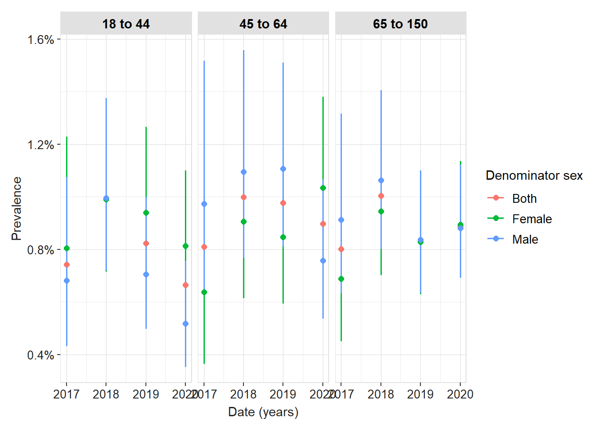

1 Incidence vs. prevalence — the epidemiological distinction
Before running any code, it is worth being precise about what these two measures actually mean, because they answer fundamentally different questions.
Prevalence answers: what proportion of the population has this condition at a given point in time (or during a given period)? It captures both old and new cases.
Incidence answers: at what rate are new cases occurring in the at-risk population? It captures only new events in people who did not previously have the condition.
Measure
Formula
Answers
Point prevalence
Cases at time t / Population at time t
How common is this condition right now?
Period prevalence
Cases during period / Population during period
How common was it over this period?
Incidence proportion
New cases / At-risk persons
What is the risk of developing it?
Incidence rate
New cases / Person-time at risk
At what rate does it occur?
NoteFor regulators and HTA bodies
Incidence rates are the most relevant measure for safety signal quantification and for risk-benefit assessments — they express how many events occur per 1,000 (or 100,000) patient-years and can be directly compared across populations and time periods. Prevalence is more relevant for burden-of-disease and healthcare resource utilisation analyses.
2 The IncidencePrevalence package
The IncidencePrevalence package implements a principled, auditable workflow for computing these measures using OMOP CDM data. It was developed by the DARWIN EU Coordination Centre and is the standard tool for incidence/prevalence analyses across the OHDSI network.
The workflow always has three steps:
1. Generate the DENOMINATOR cohort (who is at risk and when?)
↓
2. Generate the OUTCOME cohort (who had the event?)
↓
3. Estimate incidence / prevalence using these two cohorts
3 Setup
Code
library(IncidencePrevalence)library(CDMConnector)library(dplyr)library(ggplot2)# Generate a synthetic CDM with realistic outcome prevalencecdm <- IncidencePrevalence::mockIncidencePrevalence(sampleSize =50000,outPre =0.05, # 5% of population will have the outcomeminOutcomeDays =1,maxOutcomeDays =365,earliestObservationStartDate =as.Date("2015-01-01"),latestObservationStartDate =as.Date("2021-01-01"))cdm
4 Step 1: Define the denominator population
The denominator defines who is at risk and for how long. You can restrict by age, sex, and a calendar study period.
Code
cdm <-generateDenominatorCohortSet(cdm = cdm,name ="denominator",cohortDateRange =as.Date(c("2017-01-01", "2020-12-31")),ageGroup =list(c(18, 44), c(45, 64), c(65, 150)),sex =c("Male", "Female", "Both"),daysPriorObservation =365# require 1 year washout)# How many denominator cohorts were created?cohortCount(cdm$denominator)
Our study: The denominator for the acute pancreatitis incidence analysis is the type 2 diabetes population. We define it as all T2DM patients with at least 365 days of prior observation, observed between 1 January 2023 and 31 December 2025, stratified by age group (18–44, 45–64, 65+) and sex.
Quick check: Why do we require 365 days of prior observation in the denominator?
The washout period (daysPriorObservation) ensures that patients entering the denominator did not already have the outcome before their observation window began. Without it, we would count as “incident” cases patients who actually had a pre-existing condition — inflating the incidence rate. This is especially important for acute pancreatitis, where a patient admitted to hospital before the study period should not be counted as a new case.
5 Step 2: Define the outcome cohort
The outcome cohort identifies who experienced the event. For incidence, we need the first event per person during the at-risk period.
Code
# The mockIncidencePrevalence function pre-generates an outcome cohort# In a real study, you would create it from conceptCohort() or ATLAS# Check the outcome cohort existscdm$outcome |>cohortCount()
Our study: Expected crude incidence of acute pancreatitis in a T2DM population is approximately 2–5 per 1,000 person-years. If your estimated rate is an order of magnitude higher, this indicates outcome misclassification — most likely because your outcome concept set is too broad and is capturing chronic pancreatitis follow-up visits or history codes. If it is zero or near-zero, check that your outcome concept IDs are correctly mapped in the OMOP vocabulary of your specific database.
7 Step 4: Estimate prevalence
Code
prev <-estimatePeriodPrevalence(cdm = cdm,denominatorTable ="denominator",outcomeTable ="outcome",interval ="years",fullContribution =FALSE# patients contribute partial periods at edges)plotPrevalence(prev,facet ="denominator_age_group",colour ="denominator_sex")

TipPoint prevalence vs period prevalence
Use estimatePointPrevalence() when you want a snapshot on a specific date (e.g. 1 January each year — useful for burden-of-disease estimates). Use estimatePeriodPrevalence() when you want to capture anyone with the condition during a time window (e.g. any quarter — useful for healthcare utilisation studies).
8 Stratification and subgroup analyses
Code
# Stratify by year and age group simultaneouslyinc_stratified <-estimateIncidence(cdm = cdm,denominatorTable ="denominator",outcomeTable ="outcome",interval ="years",outcomeWashout =365)# Table output for sharingtableIncidenceRates(inc_stratified, type ="flextable")
9 Suppression and export
Code
# Suppress small cell counts before sharingresults <- omopgenerics::bind(inc, prev) |> omopgenerics::suppress(minCellCount =5)write.csv(results, "results/incidence_prevalence.csv", row.names =FALSE)
Quick check: Your incidence rate estimate for acute pancreatitis is 45 per 1,000 person-years in the T2DM population. The published literature reports 2–5 per 1,000. What should you do first?
An incidence rate 10–20× higher than published estimates is almost always a signal of outcome phenotype misclassification. The most common cause in OMOP databases is that the concept set captures too many non-incident events — for example, SNOMED descendants that include chronic pancreatitis, billing codes used for follow-up visits after a previously diagnosed episode, or codes used as rule-outs rather than confirmed diagnoses. The correct response is to review your concept set in Athena, restrict to inpatient/emergency settings (which dramatically improves specificity for acute conditions), and potentially run CohortDiagnostics to inspect the index event breakdown.